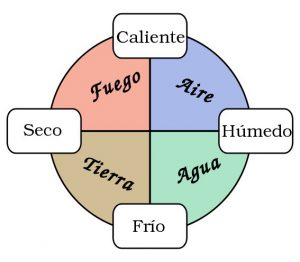
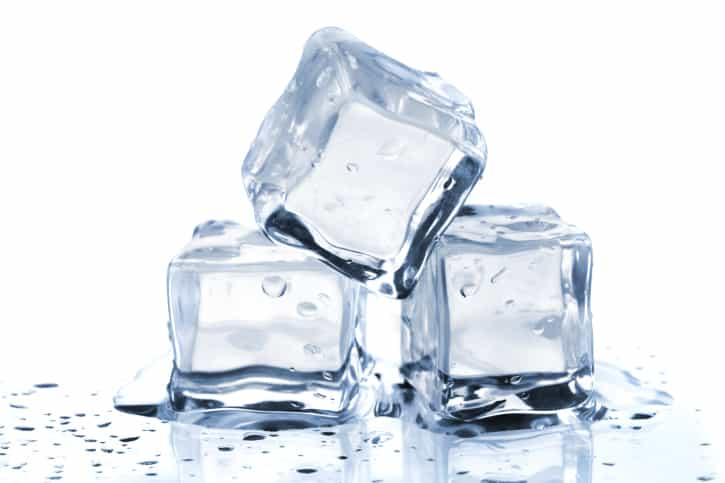
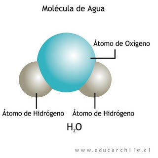

¿Qué es la materia?
Desde tiempos remotos el hombre ha tratado de describir el mundo que lo rodea a partir de observaciones y experimentaciones. El aire, el agua, la tierra y todo lo que conocemos y utilizamos está formado de materia. Se define ésta como todo lo que ocupa un lugar en el espacio y posee masa cuantificable.
 El primer intento de descripción de la materia se remonta a los griegos, Aristóteles propone la existencia de los “4 elementos” (Agua, Fuego, Tierra y Aire) a partir de los cuales se formaban todas las sustancias conocidas.El filósofo griego Demócrito propuso la existencia de una unidad fundamental en la materia, los átomos. Postuló, entre otras cosas, que éstos eran indivisibles e imperturbables y no podían ser creados ni destruidos. En aquel tiempo se concebía que el átomo como la porción de materia más pequeña, sin embargo nada se conocía respecto de su conformación, composición y estructura.
Por lo tanto, la Materia es todo lo que ocupa espacio, tiene una propiedad llamada masa y posee inercia. Cada ser humano es un objeto material. Todos ocupamos espacio y describimos nuestra masa por medio de una propiedad relacionada con ella, el peso. Todos los objetos que vemos a nuestro alrededor son objetos materiales.
Los gases de la atmósfera, aunque invisibles, son ejemplos de la materia, ocupan espacio y tienen masa.La Materia está formada por componentes. Una muestra de materia posee componentes determinados.
Por ejemplo: El agua está formada por dos sustancias simples, hidrógeno y oxígeno, presentes en determinadas proporciones fijas. Un químico diría que la composición en masa del agua es de 11,19 por ciento de hidrógeno y 88,81 por ciento de oxígeno.
La materia también posee propiedades y corresponde a las cualidades y atributos que podemos utilizar para distinguir una muestra de materia de otra. Las propiedades de la materia se agrupan generalmente en dos categorías: Propiedades Físicas y Propiedades Químicas.
Una Propiedad Física es una propiedad que una muestra de materia tiene mientras no cambie su composición. En cambio una Propiedad Química, es la capacidad de una muestra de materia para experimentar un cambio en su composición bajo ciertas condiciones.
 Por ejemplo : Cuando el agua líquida se congela formándose agua solida (hielo), sin duda el agua parece diferente y, en muchos sentidos, lo es. Sin embargo permanece inalterada la composición en masa del agua 11,19 por ciento de hidrógeno y 88,81 por ciento de oxígeno.
Algunas veces una muestra de materia cambia su aspecto físico, es decir, experimenta una transformación física. En una transformación física pueden cambiar algunas de las propiedades físicas de la muestra de materia pero su composición permanece inalterada.
En una transformación química, una o más muestras de materia se convierten en nuevas muestras con composiciones diferentes. Por tanto, la clave para identificar una transformación química es observar un cambio en la composición.
Por ejemplo: Cuando se quema un papel tiene lugar una transformación química. Los componentes principales del papel son carbono, hidrógeno y oxígeno. Los productos principales de la combustión son dos gases, uno de ellos formado por carbono y oxigeno (dióxido de carbono) y el otro por hidrógeno y oxigeno (agua en forma de vapor). La capacidad de arder del papel es un ejemplo de propiedad química.
La materia está formada por átomos. Un elemento químico es una sustancia formada por un solo tipo de átomos. Los compuestos químicos son sustancias en las que se combinan entre si átomos de diferentes elementos químicos. Actualmente se han identificado millones de compuestos químicos diferentes.
Una molécula es la entidad más pequeña posible en la que se mantienen las mismas proporciones de los átomos constituyentes que en el compuesto químico.
 Por ejemplo: Una molécula de agua está formada por tres átomos: dos átomos de hidrógeno unidos a un solo átomo de oxígeno.